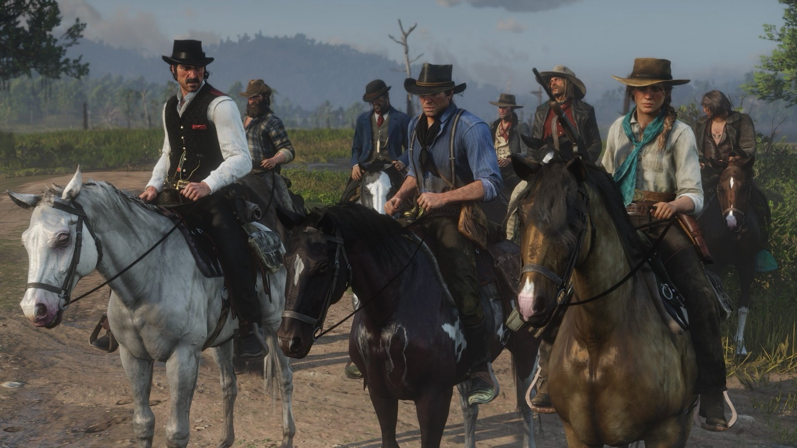
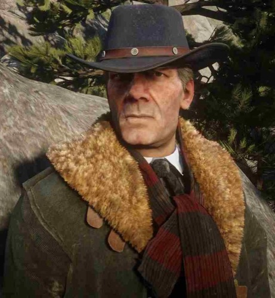
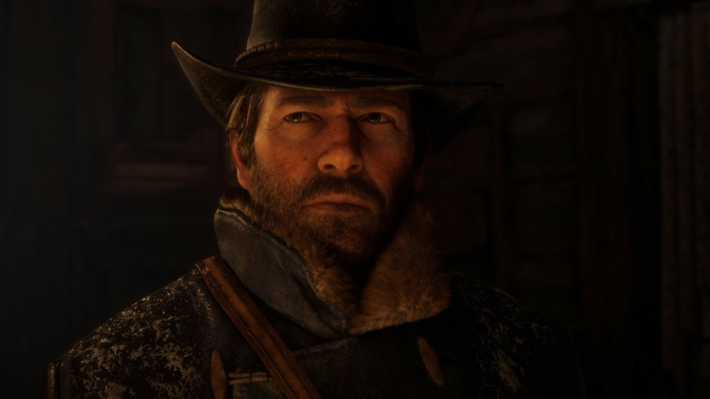
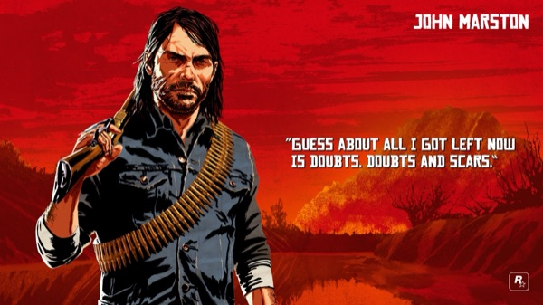
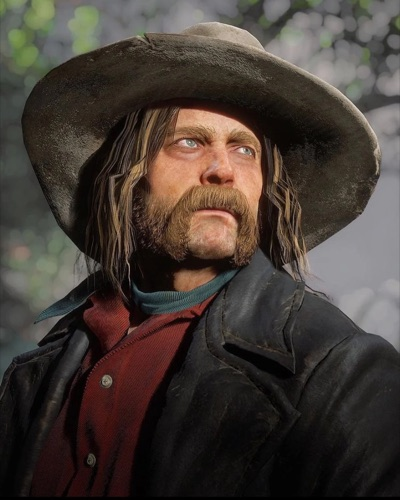
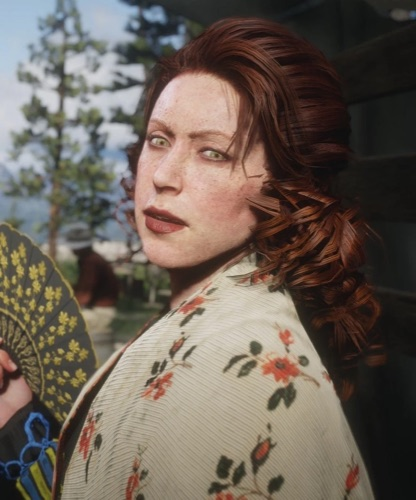
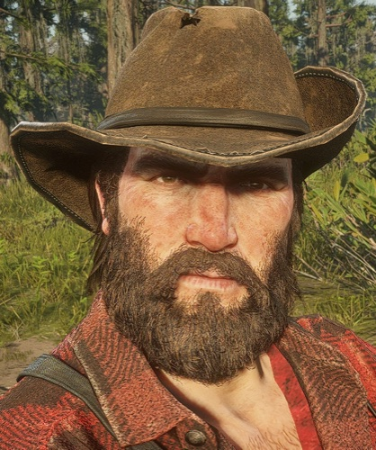
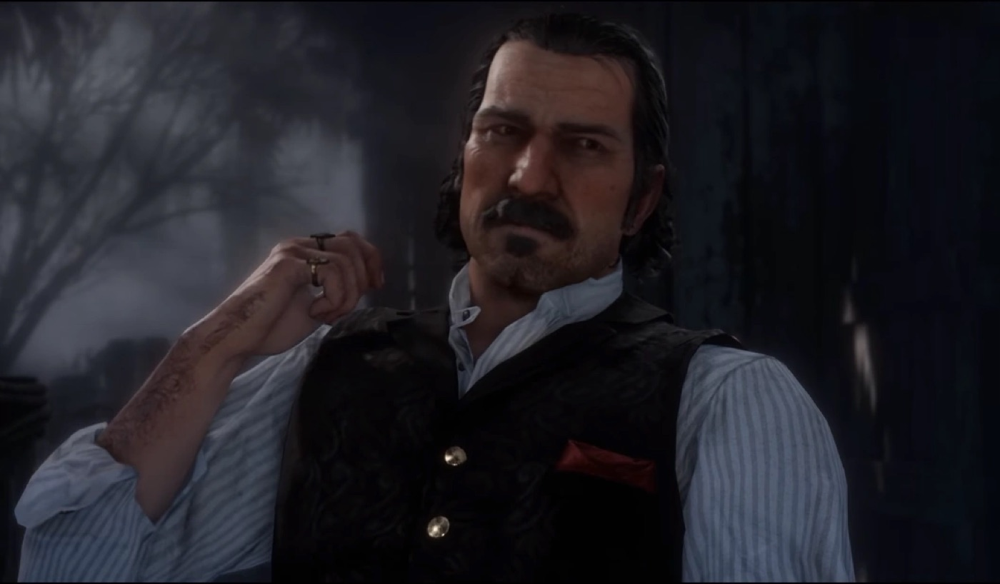
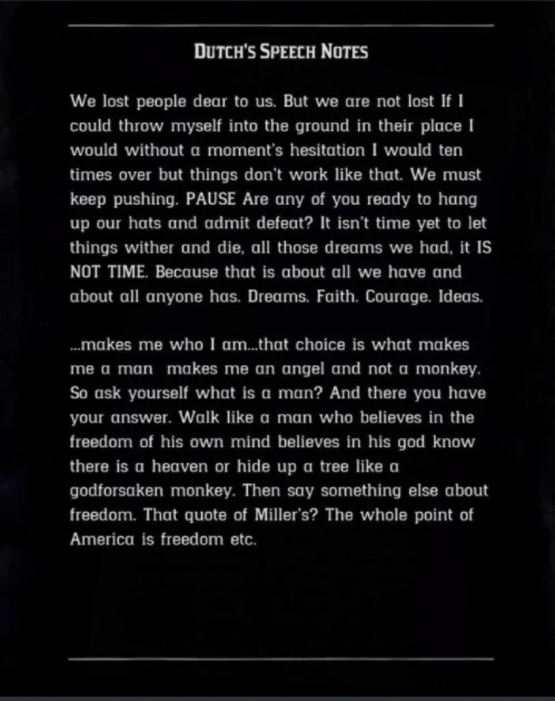

Personnage · Gang Van der Linde
Dutch van der Linde
Dutch van der Linde est le fondateur et le chef du gang Van der Linde, dans Red Dead Redemption 2 (2018) et Red Dead Redemption (2010). Le guide officiel le décrit comme farouchement opposé au contrôle de l'État et attaché par-dessus tout à la liberté individuelle.
Il est interprété par Benjamin Byron Davis dans les deux jeux.
- Naissance
- Vers 1855
- Mort
- 1911, Cochinay
- Statut
- Décédé
- Nationalité
- Américaine
- Affiliation
- Gang Van der Linde (fondateur et chef)
- Jeux
- Red Dead Redemption, Red Dead Redemption 2, Red Dead Online
- Voix
- Benjamin Byron Davis
Biographie
Origines et fondation du gang
Dutch naît vers 1855. Il raconte que son père est mort "dans un champ de Pennsylvanie", pendant la guerre de Sécession. Il fonde le gang avec Hosea Matthews et recueille des orphelins et des enfants des rues, à qui il apprend à lire : Arthur Morgan à quatorze ans, puis John Marston à douze.
En 1899, un braquage sur un ferry à Blackwater, préparé avec Micah Bell, tourne mal et contraint le gang à fuir dans les montagnes du chapitre 1. Plusieurs personnages affirment que Dutch y a abattu une jeune femme désarmée ; la scène n'est jamais montrée. Dutch parle d'acheter une terre à Tahiti une fois l'argent réuni.
La chute (1899)
Au chapitre 4, Dutch noie Angelo Bronte à Saint-Denis. Le braquage de banque qu'il mène dans la ville est un piège des Pinkerton : Hosea est tué par l'agent Milton, Lenny meurt, John est arrêté, et les survivants font naufrage à Guarma.
Au chapitre 6, Dutch refuse de faire évader John. Il tue Leviticus Cornwall à Annesburg, abandonne Arthur aux champs pétrolifères dans "My Last Boy", puis laisse John pour mort et abandonne Abigail sur les conseils de Micah dans "Our Best Selves". Lors de la dernière mission, il prend le parti de Micah contre Arthur, puis s'en va sans un mot.
Dans l'épilogue de 1907, John retrouve Micah au mont Hagen, en compagnie de Dutch. Dutch tire sur Micah, laisse John l'achever, puis s'en va.
Mort (1911)
Dans Red Dead Redemption, Dutch mène une bande de jeunes Amérindiens depuis un repaire à Cochinay, dans le West Elizabeth, et braque la banque de Blackwater. Dans "And the Truth Will Set You Free", John l'accule au bord d'une falaise. Dutch le prévient que le gouvernement aura toujours besoin d'un ennemi et que leur temps est révolu, puis se laisse tomber.
Relations

Hosea Matthews
Cofondateur du gang et son plus vieux complice.

Arthur Morgan
Son premier protégé, qui se retourne contre lui en 1899.

John Marston
Sauvé par lui à douze ans ; l'accule au bord de la falaise en 1911.

Micah Bell
Le conseiller dont l'influence grandit à mesure que le gang se délite.

Molly O'Shea
Sa compagne, qu'il finit par délaisser.

Bill Williamson
Un homme de main fidèle, qui le suit jusqu'au bout de 1899.
Conception et interprétation
Benjamin Byron Davis interprète Dutch dans les deux jeux. Pour Red Dead Redemption 2, il raconte à GQ, en avril 2019, que le planning a démarré à l'été 2013, que les séances de capture se sont étalées sur 2014, 2016 et 2017, et que jouer Dutch au sommet de sa forme pendant près d'un an avant son déclin a été déchirant. Avec ses 1,98 m, sa taille a dû être ajustée par les animateurs.
Le scénariste Michael Unsworth explique à Variety que Dutch se voit moins comme un criminel que comme un homme qui résiste à un système de pouvoir corrompu. Davis confie à Twinfinite voir en lui un homme de principes et un rêveur, pour qui le voyage comptait plus que l'arrivée.
Accueil
Twinfinite désigne Dutch meilleur personnage de 2018 et Davis meilleur comédien de doublage de l'année. Dans la liste de Polygon des 70 meilleurs personnages de jeu vidéo de la décennie (2019), Cass Marshall écrit que Dutch a commencé en héros populaire et révolutionnaire, et fini en homme triste et brisé. Colin Campbell, dans Polygon également, se montre plus sévère et le qualifie de fanfaron manipulateur.
Galerie

